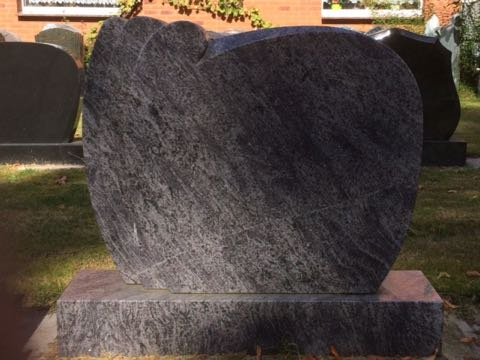

Grabmale
Unsere Grabmale
Jeder Stein erzählt von einem Menschen. Ob klassisch oder modern, schlicht oder kunstvoll – hier finden Sie Beispiele aus unserer Arbeit, sortiert nach Art des Grabmals.

Breitsteine
Das klassische Grabmal für Doppelgrabstellen.
Ansehen →
Reihensteine
Das persönliche Zeichen für die Einzelgrabstelle.
Ansehen →
Stelen
Eines der ältesten Grabzeichen – heute wieder gefragt.
Ansehen →
Liegesteine
Schlicht, pflegeleicht und ideal für Urnengräber.
Ansehen →
Grabanlagen
Einfassung, Abdeckung und Zubehör aus einer Hand.
Ansehen →Gestaltung nach Ihren Wünschen
Granit in vielen Farben und Strukturen, poliert, geschliffen oder naturbelassen: Wir zeigen Ihnen die Möglichkeiten und entwickeln gemeinsam ein Grabmal, das zur Persönlichkeit der Verstorbenen passt.
Inschriften und Ornamente werden vertieft oder erhaben eingearbeitet oder aus Bronze, Aluminium oder Edelstahl aufgesetzt.
Friedhofssatzung
Größe und Bearbeitung des Grabsteines sind oft von der Kommune oder Kirche vorgegeben. Wir beraten Sie dazu und kümmern uns um die Genehmigung.
Lassen Sie sich persönlich beraten
Vereinbaren Sie einen Termin in unserer Ausstellung – auch abends und samstags.